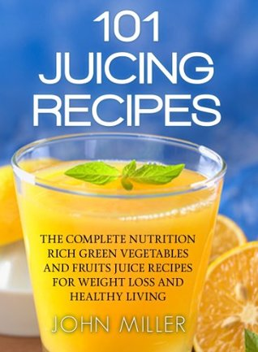
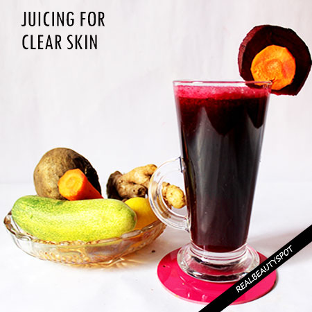

3 Detox Juice Recipes for Healthy Skin & Digestion - YouTube
2021.06.18 12:40
Sobre Imprensa Direitos autorais Entre em contato Criadores de conteúdo Publicidade Desenvolvedores Termos Privacidade Política e segurança Como funciona o YouTube Testar os novos recursos © 2021 Google LLC
- FREE Juice Recipes from Jason Vale - Juice Master
- Healthy Juice Recipes & Challenges | JuiceRecipes.com
- 21 Juicing Recipes for Healthy Mornings and Afternoon .
- Beginner Juice Recipe - Simply Jillicious
- Best Juicing Recipes for Beginners - Clean Eating Kitchen
- 20+ Juice Cleanse Recipes | Allrecipes
- Healthy Juicing Recipe Ideas : Food Network | Healthy .
- 6 Healthy Juicing Recipes for Cleanse, Detox, Weight Loss .
- Healthy Juice Cleanse Recipes – Modern Honey
- 8 Easy Juice Recipes to Get You Started Juicing | Wholefully
- FREE Juice Recipes from Jason Vale - Juice Master
- Healthy Juice Recipes & Challenges | JuiceRecipes.com
- 21 Juicing Recipes for Healthy Mornings and Afternoon .
- Beginner Juice Recipe - Simply Jillicious
- Best Juicing Recipes for Beginners - Clean Eating Kitchen
- 20+ Juice Cleanse Recipes | Allrecipes
- Healthy Juicing Recipe Ideas : Food Network | Healthy .
- 6 Healthy Juicing Recipes for Cleanse, Detox, Weight Loss .
- Healthy Juice Cleanse Recipes – Modern Honey
- 8 Easy Juice Recipes to Get You Started Juicing | Wholefully
 